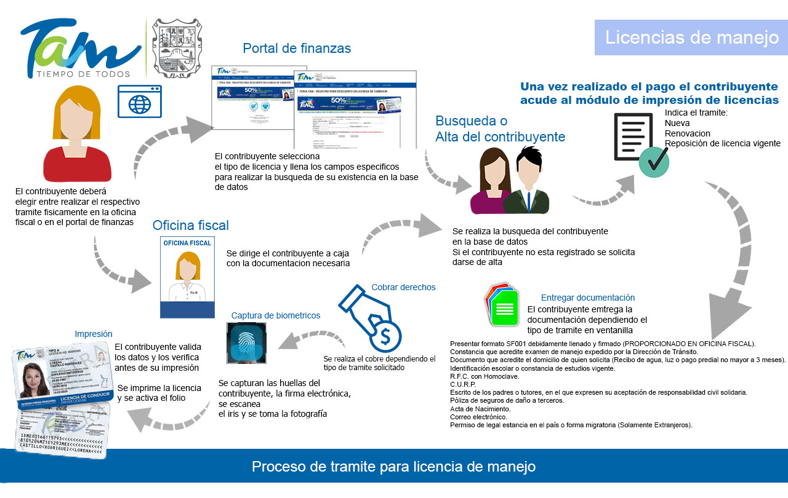

General
En la Subsecretaria de innovación y tecnologías de la información en el proyecto “Motor de pagos” se buscará implementar y optimizar tramites ya establecidos en el portal de finanzas dicho de otro modo se tendrá que verificar cada uno de los procesos ya establecidos y se buscaran métodos que los hagan más eficientes a la hora de ejecutarlos.
Resumen
Este proyecto fue realizado por un conjunto de estudiantes alumnos de la UPV en el cual lo que se realizó fueron una serie de diagramas y algoritmos con lo cual se apoyaría al equipo de análisis para su implementación en el sistema. Se inició teniendo un pequeño examen para demostrar las habilidades de cada estudiante y partiendo de ahí se formaron los equipos los cuales participarían en dicho proyecto, los equipos variaban de 3 a 4 integrantes a los que a cada equipo se le asignaba una “obligación” este era el nombre que se les daba a las tareas. Una vez realizadas las tareas se expuso cada una de las tareas a las personas responsables de los equipos.
Abstract
This project was carried out by a group of student students of the UPV in which what was carried out were a series of diagrams and algorithms with which the analysis team would be supported for its implementation in the system. It began by having a small exam to demonstrate the skills of each student and from there the teams were formed which would participate in said project, the teams varied from 3 to 4 members to which each team was assigned an “obligation” this It was the name given to the tasks. Once the tasks were completed, each of the tasks was exposed to the people responsible for the teams.
Introducción
Los equipos conformados buscaran la manera en optimizar los que se tienen que hacer cada vez que se solicita algún trámite teniendo en cuenta las normas y leyes que lo rigen ya que no se podrá modificar si en las normas queda establecido que se tiene que hacer dicho proceso, también se buscará implementar una nueva forma de negocio denominado “Casinos” los cuales estos permitirán obtener las licencias y requerimientos que se necesitan para contar con una de estas infraestructuras.
Marco Teórico
La efectividad es importante en cualquier lugar en el que se este ya que siempre se busca que los sistemas sean efectivos a la hora de operar para los usuarios. [2]define la efectividad de la siguiente manera «Ésta tiene que ver con el grado de satisfacción del cliente»
Justificación
El problema que se buscara resolver sería el de la redundancia de procesos innecesarios en los procesos que conlleva el portal de finanzas, así como la implementación de nuevos tramites que se podrán realizar por dicho medio. Por supuesto no se borrará los avances ya hechos e iniciarlo de nuevo, si no lo que se busca es tomar lo que ya está hecho como base y de ahí poder mejorarlos haciendo los cambios necesarios. Esto no se podría realizar sin la ayuda de varias secciones como la de programación y análisis ya que cada uno tienen distintas tareas que cumplir para que el proyecto salga con un excelente resultado.
Objetivos
Se iniciará con un formato y organización haciendo más visible el plan de trabajo con tablas con las que se podrán apoyar para dar inicio con la planeación y la asignación de actividades que se realizarán en el proyecto.
Desarrollo
El proyecto se inició realizando equipos de 2 y 4 alumnos a los cuales se les asignarían distintas actividades que tendrían que llevar acabar en un tiempo limitado, con el uso principal mente de equipos de cómputo se empezó a trabajar en el proyecto. El equipo se concentró en 4 obligaciones las cuales eran: Licencias de manejo, Créditos fiscales, Derechos y diversos, Cobro y ejecución.
Resultados
Este fue un diagrama general con todos los procesos que conlleva tramitar una licencia de manejo, se realizó en base a los algoritmos previamente hechos con el fin de tener un entendimiento más fácil de comprender ante todo el proceso.
Conclusiones
En lo personal creo que se cumplió con el objetivo de nuestra estancia en esta institución se realizó un buen trabajo limpio y organizado entregando en tiempo y fecha cada una de las actividades que nos solicitaban sin embargo el proyecto en general es un conglomerado de muchas actividades al final nos pusieron un aproximado de lo que hemos avanzado y para nuestra sorpresa solo se avanzó en una cuarta parte de todo el proyecto en general, básicamente solo apoyamos el avance de este mismo, aunque ese era el propósito desde un principio ya que debido al tiempo era lo máximo que podíamos avanzar. ¿Los resultados fueron de acorde a lo esperado? Por supuesto mi equipo como el de otros hicieron un excelente trabajo ya que se cumplieron con las expectativas, desde un inicio nos mencionaron la cantidad de actividades que se realizarían en el transcurso de nuestra estancia y se superaron dichas actividades en tiempo y forma.
Bibliografía
- FLORES, E.H. LEY DE HACIENDA PARA EL ESTADODE TAMAULIPAS. Periódico Oficial del Estado 2007. 5, 81.
- o el excelente de Pérez, B., et al., Un análisis de los conceptos de efectividad, eficacia y eficiencia en psicología. Panace, 2004. 5(16): p. 97.
- Keefer, A., La revista electrónica y su aceptación por parte del usuario final. Bibliodoc: anuari de biblioteconomia, documentació i informació, 1997: p. 185-190.